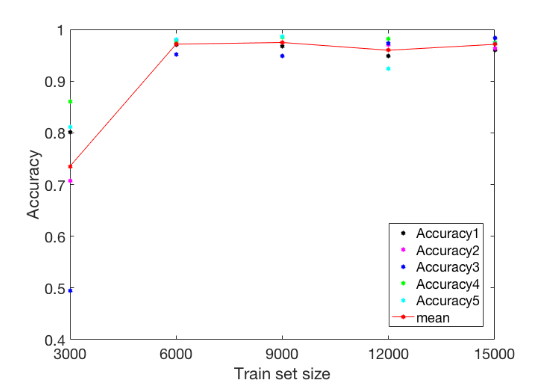

Introduction
First we must differentiate between data at hand - which is the data that is available to us as data scientist, and data not in hand, which are data not yet available or will come in the future whereby the model will be applied on. True reliability of the model will be when tested against data not in hand. To understand this, we need to go back to data collecting.
Goodness of dataset
Before collecting data for your machine learning problem, we first need to know “what makes a good dataset”?
- quality (representative and high-quality of inputs data)
- quantity (consistent and accurate labels on target data/ground truth)
- variability (reflect post deployment changes)
General Problem
Most learning systems usually assume (e.g. academic, kaggle data) that training datasets used for learning are balanced.
However, in real-world applications, training samples( data at hand ) typically exhibit a long-tailed class distribution, where a small portion of classes have a massive number of sample points but the others are associated with only a few samples1.
Long-tail data is visually represented by a hyperbolic curve like in Figure 1.
So long-tail data is the collection of all data about items that serve a specific niche and have a low demand but exist in greater varieties.
Consider example, in autonomous driving, you would want a model detecting pedestrians to work equally well, irrespective of the weather, visual conditions, how fast the pedestrian is moving, how occluded they are, et cetera. Most likely however, your model will perform much worse on cases that are more rare—for example, a baby stroller swiftly emerging from behind a parked car in unpleasant weather.
The point of failure here is that the model has been trained on data that was recorded during regular traffic conditions. As a result, the representation of these rare scenarios (as a portion of the entire training dataset) is much lower compared to common scenarios. Figure 2 is an example of two highway scenarios, whereas lane detection will be significantly more difficult in the right hand picture compared to the left.
Thus, need to acquire more of these rare cases in our training data!
Data and sampling
Consider that you have big dataset at hand. Is there a way to pick a subset of the dataset and that can be a good representation of the entire dataset?
Answer: Yes! We have statistical approach which we called “Sampling”.
Type of sampling:
- random sampling : every individual is chosen entirely by chance and each member of the population has an equal chance of being selected.
- cluster sampling: we use the subgroups of the population as the sampling unit rather than individuals. The population is divided into subgroups and a whole subgroups is randomly selected
- systematic sampling: chooses member from a target population by selecting a random starting point and selects sample members after a fixed ‘sampling interval.’
- stratified random sampling: divide the population into subgroups (called strata) based on different traits like category, then we select the sample(s) from these subgroup.
How much data?
To “learn” and achieve good generalization, how much data do we need?
- increasing the dataset sample size is a reduction in model over-fitting (avoid the model “memorize”)
- be careful of noise, outliers, and irrelevant information in additional data (recall “Goodness of dataset”)
relabel this 
?@fig-multi-cla showed the effect of training data size on cifar-10 dataset. From that report (see learning curve), learning classifier needs a training data set per class of 6000 to reach the desired accuracy of above 90%.
Figure 6 also show similar insight showing the learning classifier will improve its accuracy as the dataset is increase.

“To answer the “how much data is enough” question, it’s absolutely true that no machine learning expert can predict how much data is needed. The only way to find out out is to set a hypothesis and to test it on a real case.” — Maksym Tatariants
We always prefer large amount of data, but how large is large, and how big is big? This is a problem of sufficiency, because even though the data may be large, but contains insufficient entropy, will render the data to be small, despite the large size in bytes.
Entropy quantifies how much information there is in a random variable, or more specifically its probability distribution.
Dealing with data
Now, we already establish criteria of good data & how much data to collect.
Assume now you already collect data and still facing “imbalanced” where a small fraction of categories have a massive number of samples, and the rest of the categories are associated with only a few samples. What shall we do ?
simplify image